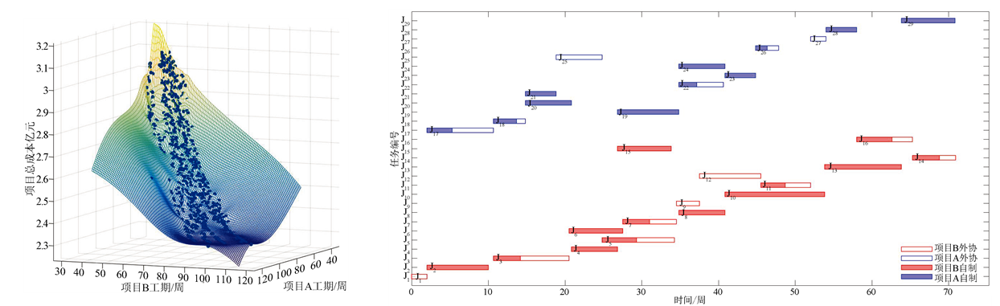

{{ page.title }}
Management Science and Engineering Vol. 7 No. 4 (December 2018)
Chong Zhu Zhijie He Yuan Xue Zhenqiang Bao Zhaoyue Zhang Kaixuan Hu
Yangzhou University

|
Abstract
To solve the resource conflict in the process of implementation of the multi-project management, a model of multi-project parallel scheduling with flexible competitive collaboration planning in which tasks can be outsourced arbitrarily and be competed among multiple partners was proposed to minimize the total cost of the projects and the duration of each project. According to the characteristic of the problem, this paper designed an improved NSGA-II algorithm for the sched-uling model, including the three-dimensional chromosome encoding scheme to identify the at-tributes of collaboration ratio, partners and priorities. With the practice project confirmation, the practicality of this model and the validity of this algorithm are verified. The optimization method can effectively coordinate the resource allocation among projects and improve the efficiency of multi project management as well.
|
Paper: [PDF]
|
Bibtex
@article{zhu2018research,
title={Research on a Model of Multi-Project Parallel Scheduling with Flexible Competitive Collaboration Planning},
author={Zhu, Chong and He, Zhijie and Xue, Yuan and Hu, Kaixuan and Zhang, Zhaoyue and Bao, Zhenqiang},
year={2018}
}